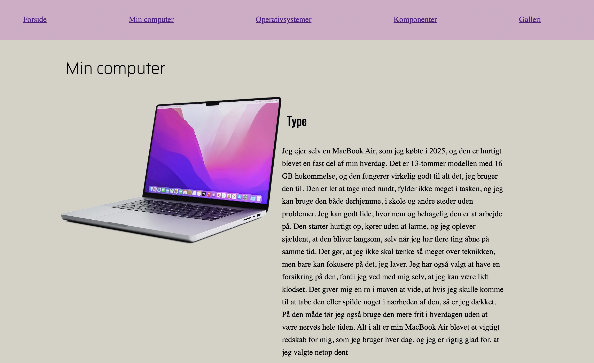

T2 Web
I temaet har vi gennemført en studiestartsprøve. Prøvens formål var at vi som studerende kunne vise vores implementering af den teori og det materiale, vi er blevet introduceret til gennem forløbet. Grundlæggende Web handler om de basale elementer inden for webudvikling. Vi blev introduceret til designprincipper, faglige begreber, arbejdsmetoder, samt forskellige filtyper og programmer, der anvendes i udviklingen af websites.

Opgave, proces og udførsel
I temaet Grundlæggende Web arbejdede vi med de centrale teknologier og principper inden for webudvikling. Vi lærte at strukturere indhold med HTML og designe layouts ved hjælp af CSS. Vi arbejdede blandt andet med semantiske elementer som section, article og aside samt opbygning af responsive layouts med Grid og Flexbox. Derudover blev vi introduceret til brugen af classes, CTA-elementer (Call to Action) og validering af kode for at sikre korrekt struktur og funktionalitet. Endelig lærte vi om ophavsret og betydningen af at anvende billeder, grafik og andet materiale på en lovlig og ansvarlig måde.